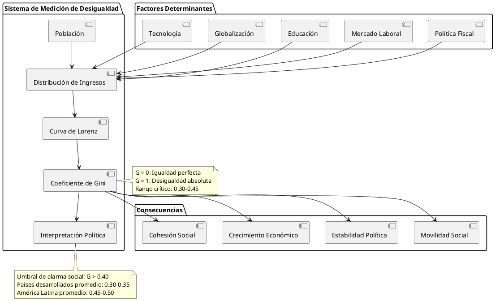
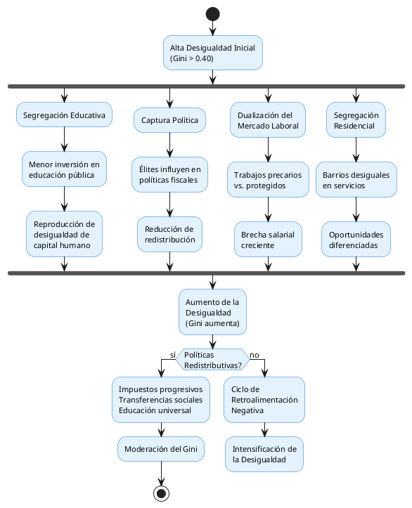

El Coeficiente de Gini: Radiografía de la Desigualdad Global
El Coeficiente de Gini: Radiografía de la Desigualdad Global

Introducción: La Métrica de la Injusticia Distributiva
El coeficiente de Gini, desarrollado por el estadístico italiano Corrado Gini en 1912, representa uno de los instrumentos más potentes y paradójicamente más incomprendidos del análisis socioeconómico contemporáneo. Este índice, que oscila entre 0 (igualdad perfecta) y 1 o 100 (desigualdad absoluta), ha trascendido su origen puramente estadístico para convertirse en un termómetro político que mide la salud distributiva de las sociedades modernas.
En un momento histórico caracterizado por la concentración sin precedentes de riqueza —donde el 1% más rico de la población mundial posee más del 45% de la riqueza total según el Informe Global de Riqueza de Credit Suisse (2023)— el coeficiente de Gini adquiere una relevancia crítica. No obstante, su aparente simplicidad numérica oculta complejidades metodológicas y limitaciones interpretativas que requieren un análisis riguroso.
Fundamentos Matemáticos y Conceptuales
Definición Formal
El coeficiente de Gini se deriva de la Curva de Lorenz, que representa gráficamente la distribución acumulada de ingresos o riqueza. Matemáticamente, se expresa como:
G = A / (A + B)
Donde A es el área entre la línea de igualdad perfecta y la Curva de Lorenz, y B es el área bajo la Curva de Lorenz. Alternativamente:
G = (1/2n²μ) Σᵢ Σⱼ |xᵢ - xⱼ|
Donde n es el número de individuos, μ es la media de ingresos, y xᵢ, xⱼ representan ingresos individuales.
Representación Conceptual del Sistema

Análisis Crítico: Limitaciones y Controversias
Limitaciones Metodológicas
- Insensibilidad a la forma de distribución: El coeficiente de Gini puede ser idéntico para dos sociedades con distribuciones radicalmente diferentes. Una concentración de riqueza en el 10% superior puede producir el mismo Gini que una distribución bimodal con clases media y baja diferenciadas.
- Ceguera ante la economía sumergida: En países con economías informales extensas (como muchos latinoamericanos donde representa el 40-60% del PIB), el Gini oficial subestima sistemáticamente la desigualdad real.
- Ausencia de dimensión temporal: El Gini es una fotografía estática. No captura la movilidad intergeneracional ni la volatilidad de ingresos, fenómenos cruciales para entender la desigualdad dinámica.
- Sesgo hacia ingresos monetarios: Ignora transferencias en especie, servicios públicos y bienes comunes que redistribuyen efectivamente el bienestar.
El Debate Kuznets vs. Piketty
La controversia sobre la evolución de la desigualdad enfrenta dos paradigmas:
- Hipótesis de Kuznets (1955): La desigualdad aumenta en las primeras fases del desarrollo económico y posteriormente disminuye, formando una curva de U invertida.
- Tesis de Piketty ("El Capital en el Siglo XXI", 2013): Cuando la tasa de rendimiento del capital (r) supera la tasa de crecimiento económico (g), la desigualdad tiende a aumentar estructuralmente. La reducción de desigualdad del siglo XX fue una anomalía histórica causada por guerras mundiales y políticas redistributivas extraordinarias.
Los datos contemporáneos favorecen a Piketty: desde 1980, el Gini ha aumentado en el 70% de los países desarrollados según datos del Banco Mundial.
Matrices Comparativas de Datos
Tabla 1: Coeficiente de Gini por Región (2024)
| Región | Gini Promedio | Rango | Tendencia 2000-2024 |
|---|---|---|---|
| Europa Nórdica | 0.27 | 0.25-0.29 | Estable |
| Europa Occidental | 0.31 | 0.28-0.35 | Leve aumento |
| América del Norte | 0.39 | 0.33-0.42 | Aumento moderado |
| Asia Oriental | 0.38 | 0.29-0.47 | Variable |
| América Latina | 0.46 | 0.41-0.53 | Disminución leve |
| África Subsahariana | 0.44 | 0.35-0.63 | Muy variable |
| Medio Oriente | 0.39 | 0.31-0.45 | Aumento |
Tabla 2: Cronología del Gini en Principales Potencias Mundiales
| País | 1980 | 1990 | 2000 | 2010 | 2020 | 2024 | Δ Total |
|---|---|---|---|---|---|---|---|
| Estados Unidos | 0.346 | 0.380 | 0.395 | 0.408 | 0.415 | 0.418 | +0.072 |
| China | 0.291 | 0.327 | 0.390 | 0.438 | 0.468 | 0.465 | +0.174 |
| Alemania | 0.264 | 0.256 | 0.264 | 0.293 | 0.301 | 0.298 | +0.034 |
| Reino Unido | 0.270 | 0.336 | 0.345 | 0.341 | 0.351 | 0.355 | +0.085 |
| Japón | 0.304 | 0.315 | 0.321 | 0.329 | 0.334 | 0.333 | +0.029 |
| Francia | 0.301 | 0.287 | 0.288 | 0.303 | 0.316 | 0.312 | +0.011 |
| Brasil | 0.585 | 0.607 | 0.590 | 0.539 | 0.489 | 0.520 | -0.065 |
| India | 0.310 | 0.315 | 0.325 | 0.358 | 0.357 | 0.358 | +0.048 |
| Rusia | 0.240 | 0.395 | 0.399 | 0.421 | 0.375 | 0.363 | +0.123 |
| Sudáfrica | 0.590 | 0.593 | 0.578 | 0.631 | 0.630 | 0.630 | +0.040 |
Fuentes: Banco Mundial, OCDE, Luxembourg Income Study (LIS), CEPAL, Instituto Nacional de Estadística de cada país.
Tabla 3: Correlación Gini con Indicadores Socioeconómicos (2024)
| Indicador | Correlación con Gini | Interpretación |
|---|---|---|
| PIB per cápita | -0.23 | Débil negativa |
| Índice de Desarrollo Humano | -0.58 | Moderada negativa |
| Movilidad social intergeneracional | -0.71 | Fuerte negativa |
| Tasa de homicidios | +0.52 | Moderada positiva |
| Esperanza de vida | -0.43 | Moderada negativa |
| Confianza en instituciones | -0.66 | Fuerte negativa |
| Participación electoral | -0.38 | Moderada negativa |
| Inversión en educación pública (% PIB) | -0.49 | Moderada negativa |
Diagrama de Flujo: Mecanismos de Transmisión de la Desigualdad

La Dimensión Política: Gini como Predictor de Inestabilidad
Investigaciones recientes establecen correlaciones inquietantes entre alta desigualdad y fragilidad institucional. El trabajo de Alesina y Perotti (1996) demostró que países con Gini superior a 0.45 experimentan probabilidades de inestabilidad política 2.3 veces mayores que aquellos con Gini inferior a 0.30.
La ola de protestas sociales que sacudió América Latina entre 2019-2020 (Chile, Ecuador, Colombia) ocurrió en países con Gini entre 0.46-0.53, validando el umbral crítico identificado por Wilkinson y Pickett en "Desigualdad: Un análisis de la (in)felicidad colectiva" (2009).
El Caso Paradigmático: Estados Unidos
Estados Unidos presenta una paradoja fascinante: siendo la mayor economía mundial, exhibe un Gini (0.418) más propio de países en desarrollo que de naciones avanzadas. Esta desigualdad se ha traducido en:
- Estancamiento de salarios reales para el 50% inferior durante 40 años
- Reducción de movilidad social intergeneracional (del 90% en cohorte 1940 al 50% en cohorte 1980)
- Polarización política extrema (correlación r=0.83 entre desigualdad condal y votación partidista)
El economista Raj Chetty (Harvard) demostró que en EE.UU., nacer en el quintil inferior ofrece solo 7.5% de probabilidad de alcanzar el quintil superior, frente al 11.7% en Dinamarca (Gini: 0.26).
América Latina: Entre la Mejora y la Persistencia
América Latina ostenta el dudoso honor de ser la región más desigual del planeta. Sin embargo, el periodo 2002-2014 marcó una excepción histórica: el Gini regional cayó de 0.54 a 0.48, impulsado por:
- Boom de commodities: Términos de intercambio favorables permitieron expansión del gasto social
- Programas de transferencias condicionadas: Bolsa Família (Brasil), Progresa/Oportunidades (México)
- Aumentos del salario mínimo: Incrementos reales del 30-50% en varios países
- Expansión educativa: Reducción de brechas de retorno a la educación
No obstante, esta mejora fue parcialmente revertida post-2015 con la caída de precios de materias primas y la pandemia COVID-19, que elevó el Gini regional a 0.50 en 2020. El caso brasileño es emblemático: de 0.539 (2010) subió a 0.520 (2024), perdiendo años de avances.
China: El Gigante Desigual
La transformación china representa quizás el caso más dramático de desigualdad generada por crecimiento acelerado. De una sociedad relativamente igualitaria bajo el maoísmo (Gini ≈ 0.29 en 1980), China transitó a Gini de 0.465 en 2024, superando a Estados Unidos.
Factores explicativos:
- Dualismo urbano-rural: El sistema hukou perpetúa desigualdades de acceso a servicios
- Concentración geográfica: Las provincias costeras (Shanghái, Guangdong) tienen PIB per cápita 3-4 veces superior a provincias interiores
- Capitalismo de Estado selectivo: Creación de multimillonarios (más de 600) mientras persisten bolsas de pobreza rural
El gobierno chino reconoce la desigualdad como amenaza existencial, adoptando desde 2021 políticas de "prosperidad común" que buscan revertir la tendencia.
Europa: La Excepción Nórdica y la Convergencia
Los países nórdicos (Noruega, Suecia, Dinamarca, Finlandia) mantienen consistentemente los Gini más bajos del planeta (0.25-0.29), producto de:
- Modelo socialdemócrata: Impuestos progresivos que alcanzan 50-60% para rentas altas
- Estado de Bienestar universal: Servicios públicos de alta calidad en educación, salud, cuidados
- Negociación colectiva centralizada: Más del 80% de trabajadores cubiertos por convenios
- Igualdad de género: Participación femenina en mercado laboral del 75-80%
Sin embargo, incluso estos países experimentan presiones al alza por globalización, inmigración y envejecimiento poblacional.
Propuestas de Política Pública: Del Diagnóstico a la Acción
Arquitectura Fiscal Progresiva
- Impuestos sobre patrimonio y herencias: Gravar concentraciones de riqueza intergeneracional
- Impuestos sobre rentas de capital: Equiparar tributación de capital y trabajo
- Combate a paraísos fiscales: Cooperación internacional para evitar elusión (iniciativa OCDE/G20 BEPS)
Inversión en Capital Humano
- Educación inicial universal: Retorno social estimado 7-10% anual (Heckman, 2013)
- Formación profesional continua: Adaptación a cambios tecnológicos
- Equidad en acceso universitario: Financiación pública con criterios meritocráticos y compensatorios
Instituciones Laborales Inclusivas
- Salarios mínimos dignos: Umbral del 60% del salario mediano
- Negociación colectiva sectorial: Cobertura extendida
- Regulación de trabajo de plataformas: Derechos laborales en economía gig
Transferencias Focalizadas y Universales
Debate emergente sobre Renta Básica Universal vs. transferencias condicionadas focalizadas. Experimentos en Finlandia, Kenia y California ofrecen evidencia mixta.
Conclusión: Más Allá del Número
El coeficiente de Gini es un instrumento imperfecto pero indispensable. Su valor no reside en la precisión numérica sino en su capacidad para visibilizar una realidad estructural: las sociedades contemporáneas están fracturadas por desigualdades que erosionan su cohesión, legitimidad y potencial de desarrollo.
La desigualdad no es un efecto colateral inevitable del crecimiento económico ni una ley natural. Es el resultado de elecciones políticas, diseños institucionales y correlaciones de poder. Como demostró Thomas Piketty, la reducción de desigualdad en el siglo XX fue producto de políticas deliberadas (impuestos progresivos, sindicatos fuertes, educación pública masiva), no de fuerzas económicas espontáneas.
El desafío del siglo XXI es triple: medir mejor (superando limitaciones del Gini con indicadores complementarios como Palma, Atkinson, participación en renta del percentil superior), entender profundamente (incorporando dimensiones multidimensionales de desigualdad: riqueza, oportunidades, poder político) y actuar decisivamente (políticas redistributivas audaces sin temor a controversia ideológica).
Como advirtió el sociólogo Richard Wilkinson: "En sociedades desiguales, todos somos más pobres, incluso los ricos". La desigualdad elevada genera externalidades negativas universales: menor crecimiento económico de largo plazo (FMI, 2014), peor salud pública, mayor criminalidad, menor confianza social, democracias más frágiles.
El Gini nos interpela no solo como economistas o analistas, sino como ciudadanos: ¿qué tipo de sociedad queremos construir? Una respuesta informada requiere tomar en serio lo que este modesto coeficiente de 0 a 1 nos está diciendo.
Referencias Documentales
- Piketty, T. (2013). "El Capital en el Siglo XXI". Fondo de Cultura Económica.
- Atkinson, A.B. (2015). "Inequality: What Can Be Done?". Harvard University Press.
- Banco Mundial (2024). "World Development Indicators". Washington, DC.
- CEPAL (2023). "Panorama Social de América Latina". Santiago de Chile.
- Chetty, R. et al. (2017). "The Fading American Dream: Trends in Absolute Income Mobility Since 1940". Science, 356(6336), 398-406.
- OCDE (2024). "Income Inequality Database". París.
- Wilkinson, R. & Pickett, K. (2009). "The Spirit Level: Why Equality is Better for Everyone". Penguin.
- FMI (2014). "Redistribution, Inequality, and Growth". IMF Staff Discussion Note.
- Credit Suisse (2023). "Global Wealth Report". Zurich.
- Alvaredo, F. et al. (2018). "World Inequality Report 2018". World Inequality Lab.
"La desigualdad no es un accidente. Es una característica del capitalismo contemporáneo, y solo puede revertirse mediante políticas públicas deliberadas y sostenidas en el tiempo." — Joseph Stiglitz, Premio Nobel de Economía 2001